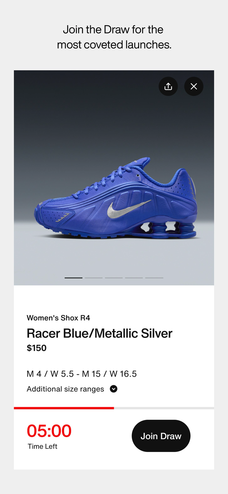
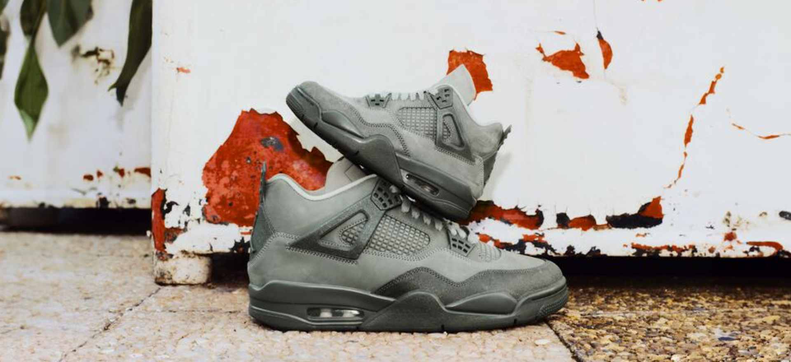

每周抢限量鞋：我用 SNKRS 搭了一套零脚本零风险的抽签工作流
以前抢限量鞋要蹲点、开脚本、赌网络，现在把 SNKRS 嵌进一套每周自动运行的流程里，少了三次手动切换，中签概率反而更稳。
开头：我每周要做的事
如果你是球鞋玩家，大概懂这种感受——热门联名款发售前三天开始刷日历，发售当天定三个闹钟，手速拼不过黄牛脚本就算了，偶尔忘了开提醒直接错过登记窗口。我以前每周要花大概两小时在这件事上：刷 Upcoming 日历、切 App 看倒计时、手动填鞋码、等预授权邮件。
现在这套流程基本自动了。我把 snkrs官网 当作整个球鞋获取工作流的核心节点，上游接日历和通知，下游绑支付和收货地址，中间不需要任何脚本，也不用开多个账号。这条链跑通之后，每次抢鞋我只需要做两件事：收到通知时点一下「加入抽签」，然后等结果邮件。
旧流程卡在哪
在说新流程之前，先复盘一下我之前的操作：
旧流程的三步法：第一步，每天晚上打开 Nike 日历，记下本周有哪些鞋要发，手动加到手机日历里，设三个提前量的闹钟（登记前一小时、前十分钟、前一分钟）。第二步，到点了切到从下载装好的 SNKRS App，找到对应的 Draw，选鞋码，点提交。第三步，等抽签结果，中了再去 App 里完成付款。
这套流程的问题不是麻烦，而是每个环节都容易断链：
- 手机日历和 SNKRS App 不是同一个系统，闹钟响了但 App 推送被系统屏蔽的情况我遇到过两次，等自己想起来时登记窗口已经关了。
- 选鞋码这一步最费精力——Jordan 系列经常偏码，我得同时打开 Nike 官网的尺码表对比，好几次提交之后才发现选大了半码。
- 付款环节虽然有预授权，但如果绑的银行卡刚好当天限额，中签邮件来了却扣不了款，等于白中。
后来我试过用脚本多开账号，理论上中签概率翻倍，结果第一次就被 Nike 的公平政策检测到了——五个关联账号的抽签全部被判无效，连预警都没有，结果出来才发现所有人都没中。
新流程：SNKRS 是核心节点
现在的流程我画一下衔接关系：
日历推送（系统级） → SNKRS 抽签提交 → Nike 预授权 → 结果通知 → 自动扣款发货整个流程里，SNKRS 是唯一的操作界面，其他环节都是系统自动触发的。具体接了这些东西：
上游：日历和通知
以前我手动同步日历，现在直接用 SNKRS App 内置的 Upcoming 提醒。在 App 里给目标鞋款点「通知我」，系统会自动登记发售时间、登记窗口时长，然后在三个时间点推送——登记前一小时、前十分钟、抽签开始那一刻。
关键设置是系统级推送权限要打开。我之前只开了 App 内推送，被手机系统的省电策略拦了好几次。现在进手机设置，把 SNKRS 的通知权限改成「允许」「显示在锁屏」「允许声音」，这样就算开了专注模式也不会漏。
中游：抽签提交（唯一手动环节）
收到推送后打开 SNKRS，找到正在登记的 Draw，选鞋码，点「加入抽签」。这一步虽然还是手动，但我只做一件事——只在一台主力手机上登录同一个 Nike 会员账号。
这里有个反常识的操作：我甚至不在电脑浏览器上同时登录。Nike 官方规则是同一账号多设备提交只认一次，所以两边同时开反而增加了被误判多设备的风险。我就守着一台主力机，SNKRS 和 Nike App 都只在这台设备上用，iPad、备用手机、朋友的电脑浏览器全部退出登录。
鞋码的问题我也提前解决了——注册 Nike 会员时填了一个默认鞋码，抽签提交时 Nike 会自动预填。对于 Jordan 系列和联名款，我会在发售前一天去官方尺码表核对一下，手动调整。但这个动作也被我嵌进了上游流程：日历提醒的前一小时推送来的时候，我正好有时间去核对尺码，确认完就等最终推送。

下游：支付和收货地址
这两个环节是预配置好的，不需要每次操作。
支付方面，我绑了一张专门用于 SNKRS 的银行卡，额度调到足够覆盖大部分限量鞋的价格。Draw 提交时系统会做预授权——暂时冻结金额验证支付能力，中签才真正扣款。我试过绑支付宝和微信，但预授权失败过一次，换成银行卡就稳定了。
收货地址我只填了一个，固定到常用地址。Nike 的公平政策监控多个维度，其中就包括收货地址。多个账号用同一个地址可能被判关联，所以我一个账号一个地址，不借也不共享。
容易断链的两个环节
整个流程跑下来，最容易出问题的其实只有两个地方：
环节一：多账号的自我诱惑
这是我踩过的坑。理论上多开账号中签概率翻倍，实际上 Nike 的反作弊系统会在抽签前先筛掉可疑提交，剩下的才进入随机抽选。我第一次开五个账号，提交状态全部显示「已 Entered」，但抽选结果全没中——说明系统在抽之前就把我那五个标记排除了，只是没告诉我。说实话这些公平政策的细节我也是翻了snkrs文档才完全搞明白，之前以为多开账号稳赚。

现在我的解决方式很简单：一个 Nike 会员账号 + 一台主力手机 + 一个固定地址。每天使用前花三秒钟自查一下，确保没在其他设备上登录。这条规则我贴在了主力机的手机壳背面，防止手贱。
环节二：预授权失败
预授权看起来是小事，但如果绑的银行卡刚好限额、或者海外卡临时冻结，中签了也扣不了款。我有一个朋友就是中签后五分钟内没完成付款，订单被取消了。
我的做法是绑一张只用于 SNKRS 的专用卡，额度设到 3000 元以上（覆盖当前大部分限量鞋的价格），平时不放太多钱。提交抽签前不需要提前充值，Nike 的预授权只是验证额度，中签后才真正扣款——这时卡里有钱就行，而且中签邮件和扣款是自动衔接的，不用手动操作。
效果：省了多少事
量化一下对比：
| 环节 | 旧流程 | 新流程 |
|---|---|---|
| 日历同步 | 手动每天刷，5 分钟/天 | SNKRS 自动登记，0 操作 |
| 闹钟设置 | 三个闹钟手动设 | App 推送自动触发 |
| 多设备登录 | 偶尔 iPad 也登 | 主力机唯一登录 |
| 鞋码核对 | 发售当天临时查 | 日历前一小时推送时核对 |
| 付款操作 | 中签后手动确认 | 预授权自动衔接 |
粗略算下来，每次抢鞋少了两次手动复制（日历同步 + 闹钟设置）、三次 App 切换（Nike 日历 → SNKRS → 支付 App）、零脚本风险。
这套流程什么时候不划算
也有局限：
- 如果 Nike 突然改了公平政策，比如引入会员等级加权，那这套「1 账号 1 设备」的策略可能吃亏。但 Nike 目前反复强调 Draw 中签概率和等级无关，所以暂时安全。
- 如果我同时追多个地区的发售，中国版、美国版、日本版各有不同鞋款，那一个账号只能覆盖一个地区，需要分别注册不同区域的账号——但各区域之间不互相关联，所以不算违规。
- 如果手机丢了或者主力设备坏了，换新设备登录时 Nike 可能触发安全验证。这种情况需要提前在账号设置里添加备用联系方式，我加了一个备用邮箱。
总的来说，这套流程的核心思路是把 SNKRS 作为唯一的操作入口，上下游全部交给系统自动处理，中间只做一件事——老老实实守规则。反而比我之前折腾脚本、多开账号、手动同步日历更省心，中签概率也没见得更低。毕竟 Nike 的 Draw 本来就是随机抽选，守规则的老实人反而不会被提前筛掉。写到这里顺便提一句，整理这套玩法用到的资料散在三个仓库里，维护都在 GitHub，国内访问的朋友可以去 Gitee 或 GitCode 翻，内容一样只是镜像位置不同。